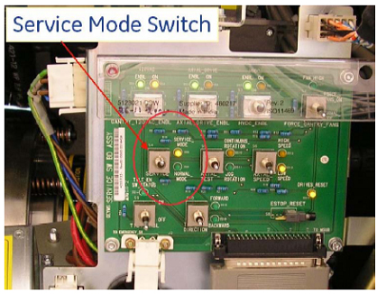
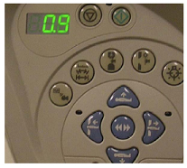

Operating Documentation
Direction 5193574-800, Rev# 22
LightSpeed 7.X Service Methods
Module Version 1.0, Version Date 10/24/08
Operating Documentation |
| Last Revision | 7 August 2008 |
| ||||
| Shock Hazard | ||||
| Voltage Present | ||||
| Do NOT perform any service on the left side while the gantry is energized. |
| NOTE: | The tilt speed must be adjusted to 1 degree/second. |
Set the gantry service switch panel to Service Mode (see Illustration 1)
Using the gantry controls, tilt the gantry forward and back. The gantry speed is displayed on the gantry control (see Illustration 2).
Verify the tilt speed is adjusted to 1 degree/second. The most accurate tilt speed is read in the -10 degree to +10 degree range.
If the speed is correct, record the reading on the PM Report Form
If the speed is not correct, make a note of the speed for use later.
Verify the gantry tilts to +30 degrees; record this on the PM Report Form.
Verify the gantry tilts to -30 degrees; record this on the PM Report Form.
Illustration 1: Gantry Service Switch set to Service Mode

Illustration 2: Gantry Control Speed Display
